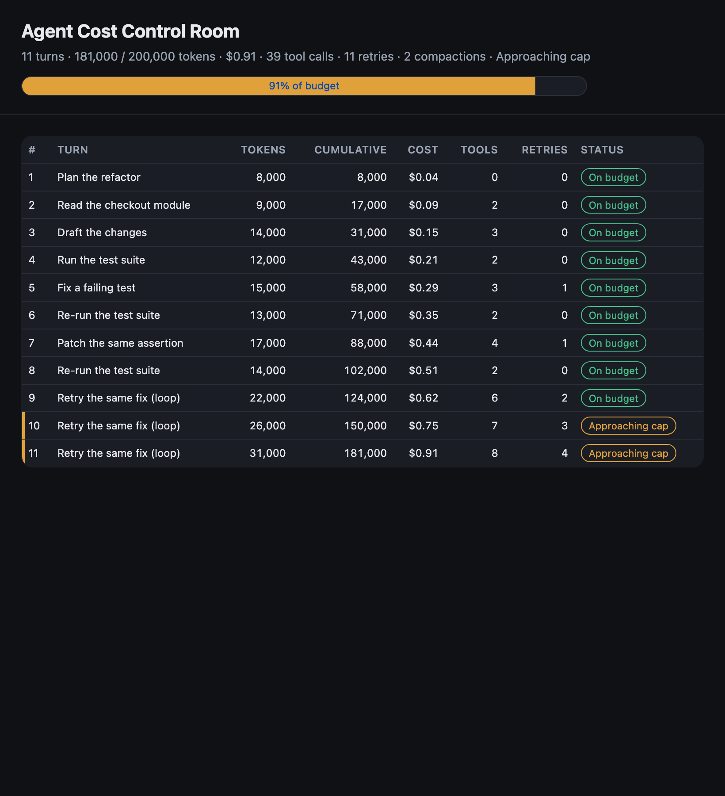
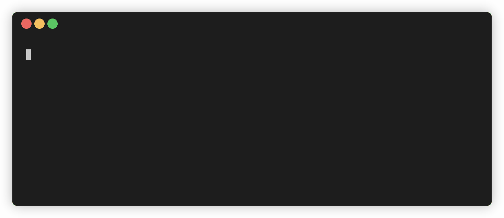
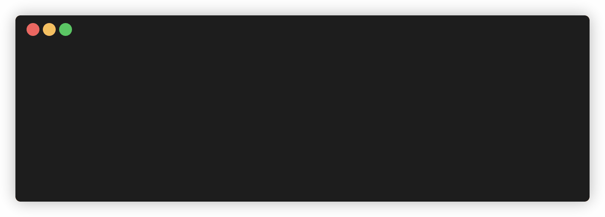

This codelab is part of the 2026 Agentic Architect Sprint by Google.
An autonomous agent that loops on a failing step — re-running a test, re-patching the same assertion — can quietly burn tokens (and money) until someone notices. Controlling what an agent may do isn't enough; you also need to control how much it may spend. An architect will not run an agent build without a budget and an automated kill-switch.
This codelab builds both with the Antigravity SDK (google-antigravity, Python). A monitor reads the SDK's live cumulative token usage, surfaces the running cost (including Gemini's reasoning/"thinking" tokens), warns as it nears the cap, and — once the budget is exhausted — denies every further tool call, halting a runaway loop. A Cost Control Room dashboard renders the spend.
monitor/budget.py) that accumulates token usage and classifies it ok / warn / tripped.agent.conversation.total_usage.stop().The monitor is a pure update() / decide() pair, tested offline with python -m unittest — no agent run or live tokens needed to verify it. Running the live agent against the kill-switch is a short, bounded demonstration.
Target duration: 35–45 minutes.
The monitor is verified offline with no SDK installed. Install the SDK only to run a live agent against the kill-switch. Install with python -m pip so it lands in the same interpreter you run the agent with (a bare pip can target a different environment, e.g. under Anaconda):
python -m pip install google-antigravity
python -c "import google.antigravity; print('SDK ready')"
The SDK needs credentials. Choose one path:
Cloud project (Vertex AI — recommended for enterprise). agent.py switches to the Vertex backend automatically when GOOGLE_CLOUD_PROJECT is set:
gcloud auth application-default login
export GOOGLE_CLOUD_PROJECT="your-project-id"
export GOOGLE_CLOUD_LOCATION="global" # or your region, e.g. us-central1
Gemini API key. Or use a Developer API key instead:
export GEMINI_API_KEY="your-key"
Confirm the prerequisites — the monitor and its tests are pure Python; the Cost Control Room and its static checks run on Node:
python3 --version # Python 3.9+
node --version # Node.js 20+
The kit lives in workspace/. Pull down just that folder with a sparse checkout:
git clone --no-checkout --depth 1 https://github.com/evanca/gde-sprint-26-budgets-public.git
cd gde-sprint-26-budgets-public
git sparse-checkout init --cone
git sparse-checkout set workspace
git checkout
cd workspace
Confirm the baseline. The dashboard and ledger are valid; the budget tests are intentionally red until you build the monitor:
node verify.mjs # Static verification passed.
node --test # console tests pass
python -m unittest discover -s tests -p "test_*.py" # some FAIL — budget is a stub
The monitor logic lives in monitor/budget.py (pure Python). The SDK wiring is in monitor/agent.py, and the dashboard reads the ledger in data/.
The starter monitor/budget.py is a no-op stub, so nothing accounts for spend. Serve the Cost Control Room and look at a build that already fell into a retry loop — turns 9–11 re-attempt the same fix, climbing toward the cap:
python3 -m http.server 8000 # open http://localhost:8000/ , then stop it

Nothing stopped it — there is no monitor. With no budget, a loop like that runs until your quota, or your bill, says stop. That is what the kill-switch prevents.
Open monitor/budget.py (a no-op stub) and implement the monitor described in rules/*.md. The logic is pure — no SDK import — so it unit-tests offline. update(turn_tokens, state) accumulates this checkpoint's tokens and classifies the result; decide(state) is the kill-switch. You can author it yourself or ask the (still unmonitored) agent:
Read every brief in rules/. Implement monitor/budget.py: export tokens_of(response_like) reading usage_metadata.total_token_count, and update(turn_tokens, state) using state["usage"] and state["budget"]. Set state="tripped"/action="kill" with a stop_reason when turns exceed max_turns or cumulative tokens reach max_tokens, state="warn"/action="warn" with a system_message at warn_at_tokens, otherwise state="ok". Also export decide(state) returning {"decision":"deny",...} once tripped, else {"decision":"allow"}. Run `python -m unittest discover -s tests -p "test_*.py"` until all tests pass; do not weaken the tests.
Confirm the monitor is green:
python -m unittest discover -s tests -p "test_*.py" # all budget tests pass
monitor/agent.py turns that pure logic into a live kill-switch. A pre-tool Decide hook reads the conversation's live cumulative usage before each tool call, feeds the delta through update(), surfaces the running cost, and — once decide() reports tripped — denies the call:
from google.antigravity import Agent, LocalAgentConfig
from google.antigravity.hooks import PreToolCallDecideHook
from google.antigravity.types import HookResult
from .budget import update, decide
class CostKillSwitch(PreToolCallDecideHook):
def __init__(self, budget):
self.state = {"budget": budget, "usage": {"total_tokens": 0, "turns": 0}}
self._last = 0
self.read_total = lambda: 0 # wired to the live agent below
async def run(self, context, data) -> HookResult:
live = int(self.read_total() or 0) # cumulative tokens so far
result = update(max(0, live - self._last), self.state)
self._last = live
self.state["usage"] = {"total_tokens": result["cumulative_tokens"],
"turns": result["turns"],
**({"state": "tripped", "stop_reason": result["stop_reason"]}
if result["state"] == "tripped" else {})}
if result["system_message"]:
print(result["system_message"])
verdict = decide(self.state["usage"])
return HookResult(allow=verdict["decision"] != "deny",
message=verdict.get("reason", ""))
kill_switch = CostKillSwitch({"max_tokens": 40000, "warn_at_tokens": 25000})
config = LocalAgentConfig(workspaces=[PROJECT_ROOT], hooks=[kill_switch])
async with Agent(config) as agent:
kill_switch.read_total = lambda: agent.conversation.total_usage.total_token_count or 0
...
Run the agent on a task expensive enough to blow the (deliberately low) budget:
python -m monitor.agent
The monitor reports the running cost before each tool call. It does real work under budget, warns as it approaches the cap, then the kill-switch trips and denies every further call — containing the runaway at the budget, not the bill:

The closing summary reads the cumulative usage straight off the conversation — including the reasoning ("thinking") tokens:
--- Run cost ---
Turns: 1 · Thinking tokens: 5,368 · Total tokens: 156,537
The monitor is verified deterministically, with no agent, by feeding fixture token counts to update() / decide() against a budget:
python -m unittest discover -s tests -p "test_*.py" # monitor + kill-switch tests pass
node --test # control-room roll-up tests pass
node verify.mjs # budget + ledger static checks pass

You can also exercise the kill-switch on a fixture turn directly:
python -c "import json; from monitor.budget import tokens_of, update, decide; s={'budget':{'max_tokens':40000,'warn_at_tokens':25000,'usd_per_1k_tokens':0.005},'usage':{'total_tokens':39000,'turns':3}}; r=update(tokens_of(json.load(open('fixtures/turn-over.json'))), s); print(decide({'state':r['state'],'stop_reason':r['stop_reason']}))"
With 39,000 tokens already spent, one more over-cap turn trips the kill-switch and decide() returns a deny for every subsequent tool call.
You gave an autonomous agent a budget it cannot exceed: a monitor that reads the SDK's live cumulative token usage, warns as it nears the cap, and trips an automated deny-all kill-switch — containing a runaway loop at the budget instead of the bill, all visible on a FinOps Cost Control Room.
You learned:
agent.conversation.total_usage, including Gemini's reasoning ("thinking") tokens.stop() API.Portability: the same pattern works on any agent SDK that reports cumulative usage and supports a pre-tool hook — read the running total, classify it, and deny once over budget; only the field names change.